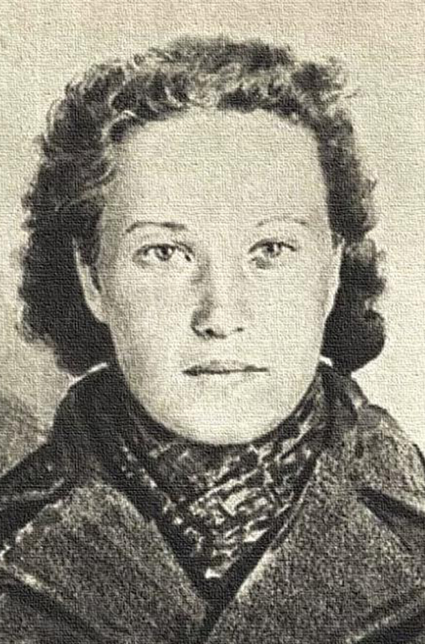

Вера Харужая (1903 — 1942)
Вера Захараўна Харужая — легендарная партызанка, падпольшчыца, публіцыст і Герой Савецкага Саюза. Яе жыццё стала сімвалам неверагоднай стойкасці і адданасці сваім ідэалам.
Хто яна такая?
Вера нарадзілася ў Бабруйску ў сям’і рабочага. З юных гадоў яна ўключылася ў палітычную барацьбу. Гэта была жанчына з «жалезным» характарам: яна працавала настаўніцай, журналістам і была адным з кіраўнікоў камуністычнага падполля ў Заходняй Беларусі, калі тая ўваходзіла ў склад Польшчы.
Чым яна вядомая і яе подзвігі:
- Барацьба ў Заходняй Беларусі: За сваю падпольную дзейнасць яна была арыштавана польскімі ўладамі і правяла ў турмах агулам каля 7 гадоў. Там яна напісала знакамітыя «Лісты на волю».
- «Ганна Карнілава»: Падчас Другой сусветнай вайны, ужо маючы маленькую дачку і будучы ў эвакуацыі, Вера добраахвотна адправілася на фронт. Пад псеўданімам «Ганна Карнілава» яна ўзначаліла падпольную групу ў акупаваным Віцебску.
- Збор разведданых: Яе група перадавала савецкаму камандаванню найкаштоўнейшыя даныя аб перамяшчэнні нямецкіх войскаў і размяшчэнні складоў.
- Мужнасць перад тварам смерці: У лістападзе 1942 года яна была схоплена гестапа. Нягледзячы на страшныя катаванні, Вера не выдала ніводнага імя і не раскрыла месцазнаходжанне свайго атрада. Яна была пакараная смерцю, так і не парушыўшы маўчання.
Памяць і ўзнагароды
У 1960 годзе Веры Харужай было пасмяротна прысвоена званне Героя Савецкага Саюза. У яе гонар названы вуліцы ў многіх гарадах Беларусі (самая вядомая — у Мінску), усталяваны помнікі, а яе біяграфія вывучаецца як прыклад самаахвярнасці дзеля Радзімы.